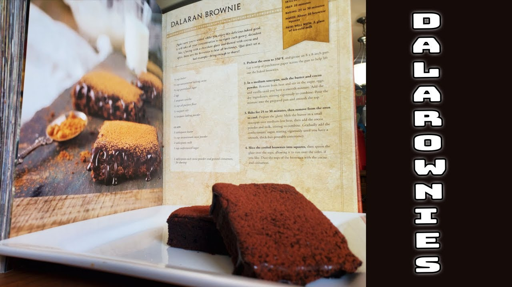

Dalaran Brownies

Delicious, dark chocolate brownies inspired by WoW.
These brownies come straight from the WoW cookbook.
They are rich, fudgy, and truly decadent. Perfect for any dessert
or cookout!
This recipe makes a 8x8 pan of brownies. If you want to
make a 9x13 pan, please double the recipe. Enjoy!
Ingredients
For the brownies:
- 1/2 cup butter
- 1/3 cup unsweetened cocoa powder
- 3/4 cup granulated sugar
- 2 eggs
- 1 tsp vanilla extract
- 1/4 tsp baking soda
For the glaze:
- 2 tbsp butter
- 1/3 cup unsweetened cocoa powder
- 2-4 tbsp milk or water
- 1 cup confectioners sugar
Steps
Follow along with the steps to make these yummy brownies:
- Preheat oven to 350-degrees F. Meanwhile,
prepare your 8x8 (or 9x9) pan with parchment paper.
- Comine eggs, vanilla, sugar, and a pinch of salt in a large bowl.
- Combine cocoa and butter in a saucepan over medium-low heat.
Melt butter and whisk to combine.
- Add the warm cocoa mixture to the egg mixture.
Do this slowly and whisk the entire time to
ensure the eggs don't scramble.
- Add the dry ingredients and mix well to combine.
- Pour into prepared pan and bake for 20-30 minutes.
- Remove from oven and let cool. While the brownies cool,
let's make the glaze.
- Combine cocoa and butter in a saucepan over medium-low heat.
Whisk and cook until butter is melted and everything is combined.
- Add the confectioners sugar. If the glaze becomes too thick, use water or milk to loosen as needed.
- Slice the brownies, top with glaze, and serve. Yum!